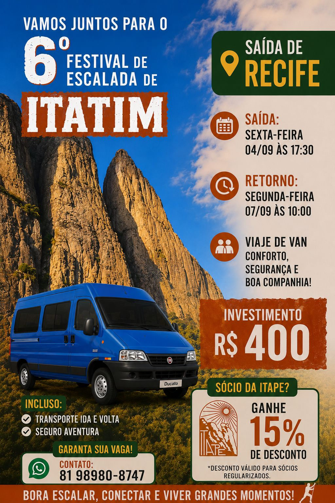

6º Festival de Escalada de Itatim
Saída de Recife de van com conforto, segurança e boa companhia para um dos principais festivais de escalada da região.
Saída (Recife)
Sexta (04/09) às 17:30
Retorno
Segunda (07/09) às 10:00
Incluso
Transporte ida/volta + Seguro
Investimento
R$ 400,00